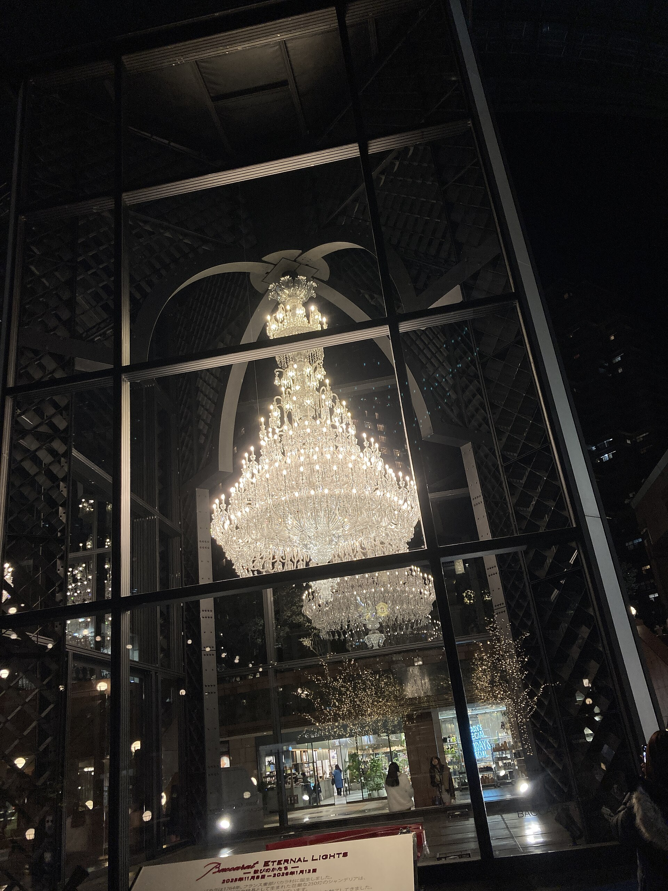
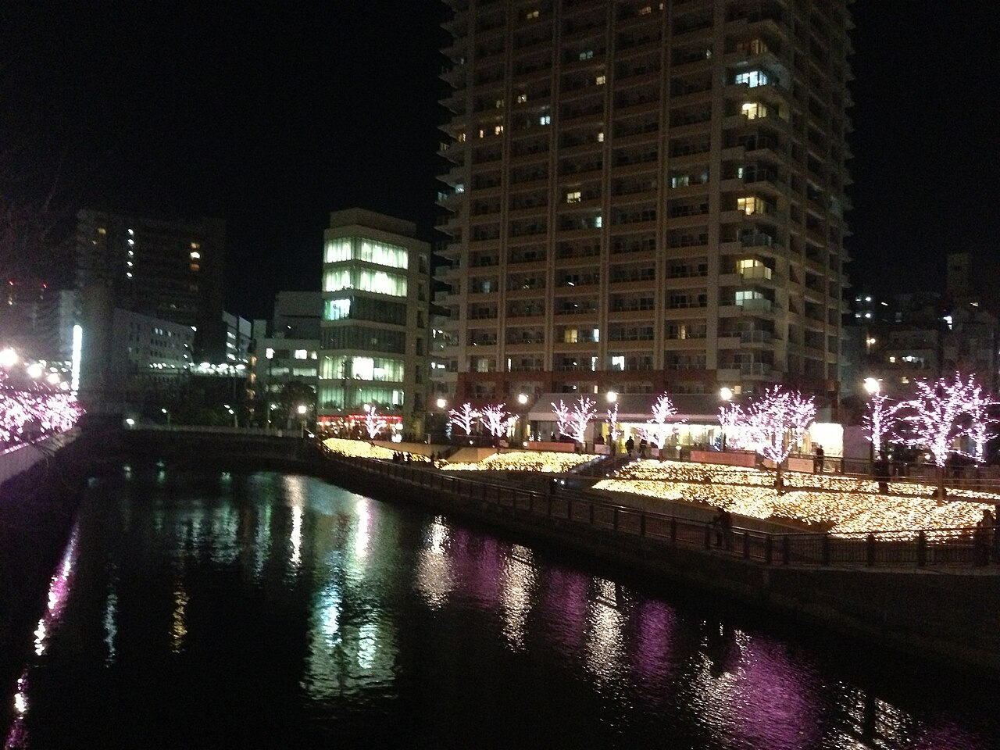
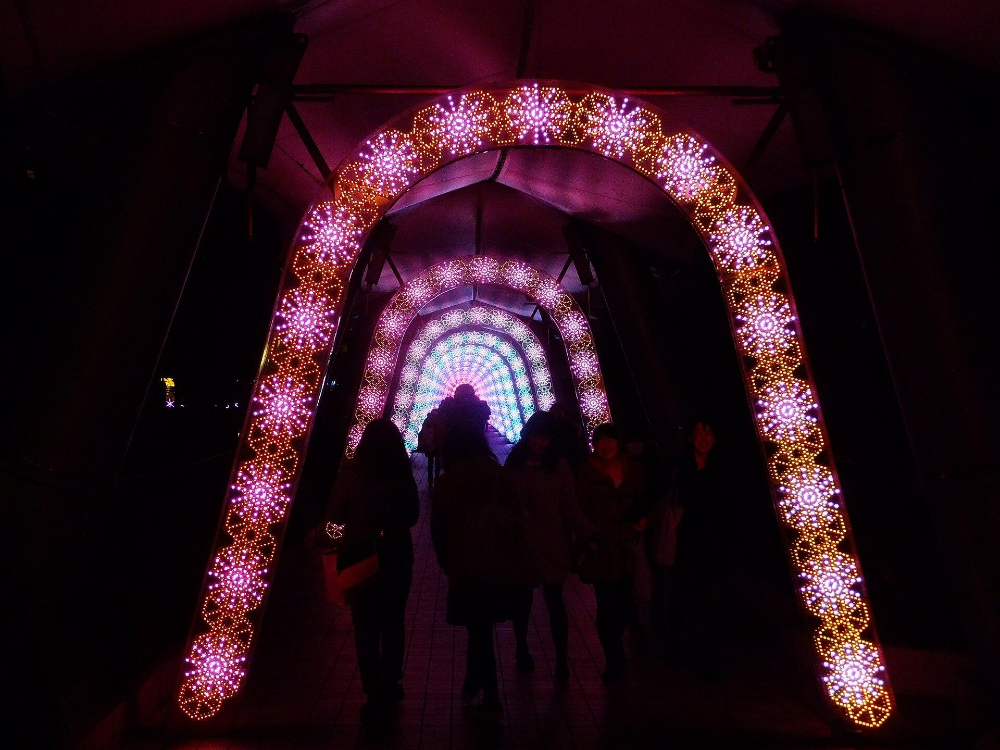

住日本幹嘛啦
住日本幹嘛啦
下班繞去惠比壽，看一盞白天就亮著的水晶燈
2026 年 11 月 14 日到 2027 年 1 月 11 日，惠比壽花園廣場中央廣場，點燈時間 11 點到 23 點，聖誕市集只到 12 月 25 日
期間限定的展覽、祭典、燈飾和快閃活動，結束就沒了。先把日期記下來。

2026 年 11 月 14 日到 2027 年 1 月 11 日，惠比壽花園廣場中央廣場，點燈時間 11 點到 23 點，聖誕市集只到 12 月 25 日

百貨線上還買得到，星巴克抽選已截止，無印良品的福缶到 11 月中還沒有官方消息

目黒川みんなのイルミネーション2026，59 天、約 41 萬球，電是燒回收食用油發的

TOKYO SNOW DOME CITY，102 天、100 萬球以上、燈飾免費參觀

想拍東京車站和燈飾同框，先確認你要去的是哪一條路。